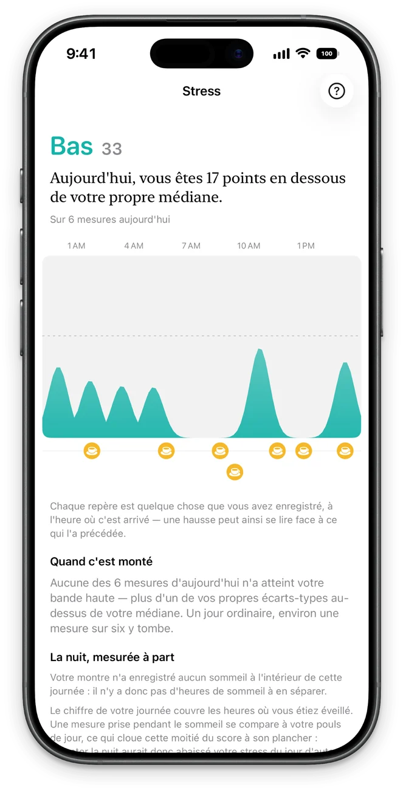
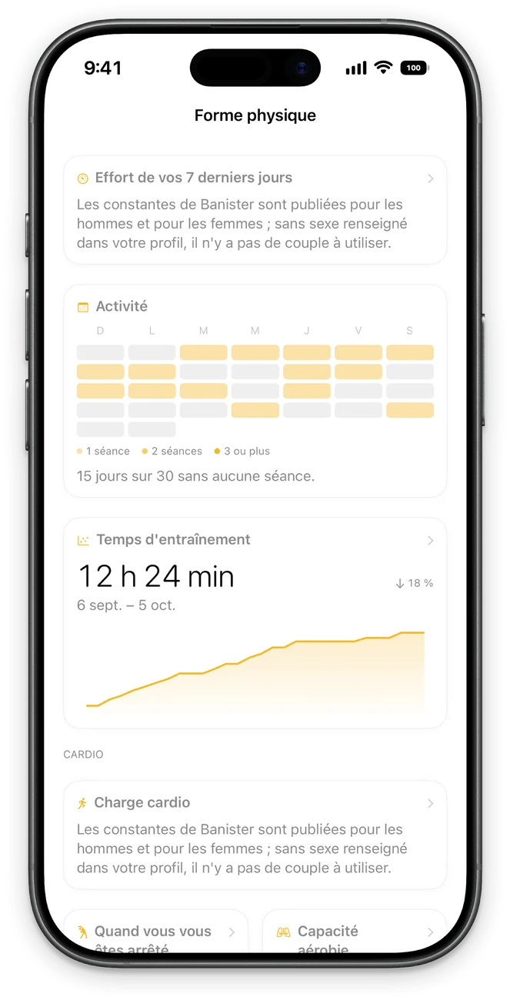
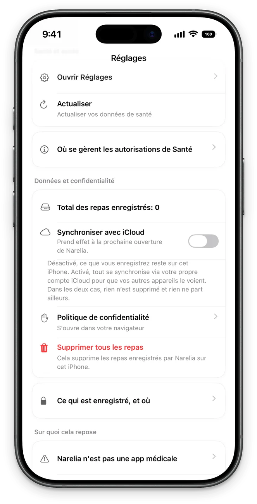
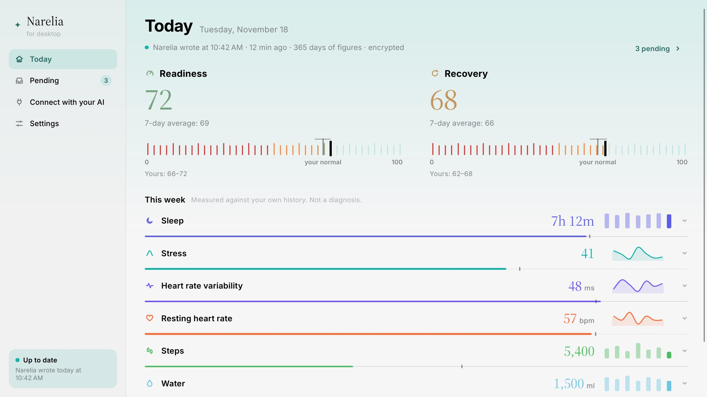

iPhone · Apple Watch · et désormais, Mac
Vos données, comparées à vous.
Narelia lit votre Apple Watch et vous compare à vous-même, dans l’iPhone et sans compte. Et désormais, depuis votre Mac, elle peut apporter vos chiffres à l’IA que vous utilisez déjà. Sans serveur Narelia entre les deux, parce qu’il n’y en a pas.

L’app iPhone est gratuite et sans compte, sous iOS 26. Apple Watch recommandée.


Le chemin de vos chiffres.
Quatre étapes, toutes à vous. Ce que votre IA propose revient par le même chemin et attend sur l’iPhone jusqu’à ce que vous disiez oui.
-
Votre iPhone
Narelia calcule tout ici et n’écrit que les chiffres que vous choisissez, chiffrés avec votre mot de passe.
-
Votre dossier
iCloud Drive › Narelia, sur votre propre compte. Narelia le crée pour vous depuis l’iPhone.
-
Votre Mac
Narelia pour Mac ouvre le fichier avec le mot de passe gardé dans votre trousseau, et le sert via narelia-mcp.
-
Votre IA
Claude, Codex, Cursor, OpenClaw… Celle que vous utilisez déjà lit vos chiffres et peut proposer un enregistrement.
Ce que votre IA demande de noter revient à l’iPhone et n’est enregistré que lorsque vous le confirmez là-bas.
Serveur Narelia
Il n’existe pas : aucun compte à créer, aucune copie de vos données chez nous.
L’app
Chaque chiffre, face à votre propre histoire.
Narelia ne vous compare pas à une table de population. Elle vous compare à vos nuits et à vos semaines, dit de combien chaque signal a bougé, et n’affirme jamais plus que ce que les données permettent.
-
Vos chiffres face à votre propre histoire
-
Votre stress au fil de la journée, la nuit à part

-
Votre effort face à vos propres semaines

-
Vos récipients et vos quantités rapides

-
Sans compte, sans serveur ; iCloud seulement si vous l’activez

- Readiness
- Elle part de votre récupération du matin et bouge avec ce que la montre mesure dans la journée. Si vous avez dormi sans la montre, elle l’indique : « De jour seulement ».
- Récupération
- Variabilité, pouls au repos, respiration et sommeil face à vos propres nuits, avec ce que chaque signal a déplacé.
- Nuit, stress et constantes
- La nuit par phases, le stress au fil de la journée et chaque constante sur sa plage personnelle.
- Forme physique
- L’effort de la semaine face à vos semaines habituelles, avec vos entraînements et vos séances de force.
- Des repas à partir d’une photo
- Narelia propose ce qu’il y a dans l’assiette et vous confirmez. C’est lu sur l’iPhone même, avec Apple Intelligence sur les modèles compatibles.
- Eau et caféine, en 3D
- Avec votre bouteille, votre tasse ou votre canette : faites glisser le niveau sur le récipient lui-même. Créatine et protéines aussi.
- Siri et Apple Intelligence
- Demandez votre variabilité, votre récupération ou la nuit : elle répond comme son écran, sans réseau. Raccourcis propose « Obtenir les données de Narelia ».
- Montre et widgets
- L’Apple Watch a sa propre app et ses complications ; l’iPhone, des widgets en quatre styles.


Nouveau · Narelia pour Mac
Votre IA, avec vos chiffres sous les yeux.
- Aujourd’hui. Les chiffres écrits par votre iPhone, avec leur semaine et votre plage.
- En attente. Ce que votre IA a demandé de noter, en attente sur l’iPhone.
- Connexion à votre IA. 22 apps et agents ; 15 se configurent d’un bouton.
Avec l’IA que vous utilisez déjà.
Apps de discussion
Claude Desktop LM Studio AnythingLLM Jan Msty Studio Cherry Studio Chatbox
Agents
Codex Claude Code Gemini CLI Antigravity OpenCode Goose Hermes Agent OpenClaw Muse Code Copilot CLI Cline
Éditeurs
Cursor VS Code Devin Desktop Zed
Configurée pour vous avec « Connecter » À la main : Narelia vous donne quoi coller
Le guide pas à pasAu-delà de l’app.
Readiness, pouls heure par heure, stress, sommeil, constantes, eau et activité, sur l’écran d’accueil, l’écran verrouillé et l’Apple Watch. En quatre styles : Narelia, Nuit, Éditorial et Classique.


Sans compte. Sans serveur.
Toute l’analyse se fait sur votre iPhone. Vos données y restent, avec l’app Santé ; la copie iCloud est facultative, va sur votre compte et reste désactivée tant que vous ne l’activez pas.
Avec votre IA, vous choisissez quels chiffres elle voit et quand elle cesse de les voir. Celle qui les reçoit, c’est cette IA, selon ses propres conditions : lisez-les avant de la connecter.
Pas d’analytique ni d’identifiants publicitaires. Vos propres chiffres ne passent jamais derrière un paiement ; Narelia Pro ajoute des outils comme les expériences guidées, le rapport PDF et la connexion à votre IA. Lisez la politique de confidentialité.
Commencez par l’iPhone.
Vos références commencent à se former dès vos premières nuits avec la montre. Le Mac et votre IA, quand vous voulez.